What satellites measure about Gilgit-Baltistan's glaciers, snow and stored water: how fast the ice is going, what is driving it, and what that means for water downstream. Every figure comes from a named sensor and has been tested.
What this means for water: today's meltwater includes ice that is not replaced. That deficit melt props up summer river flow while the glaciers shrink, and it ends when the ice runs out. The 2025–26 low shows how fast GB's storage buffer can be drawn down in a hot year. These are inferences from the measurements, not a flow forecast. River-gauge data was not part of this assessment.
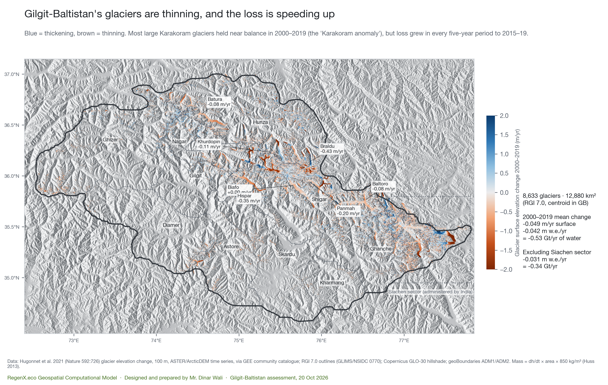
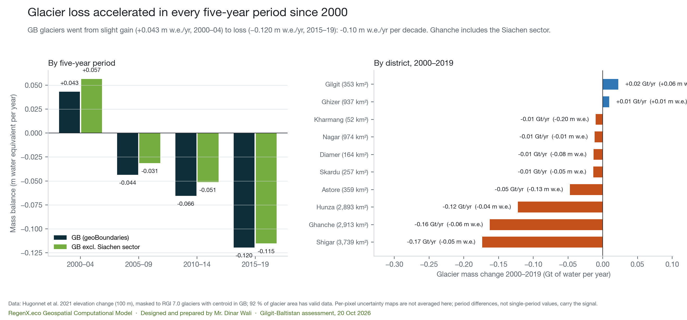
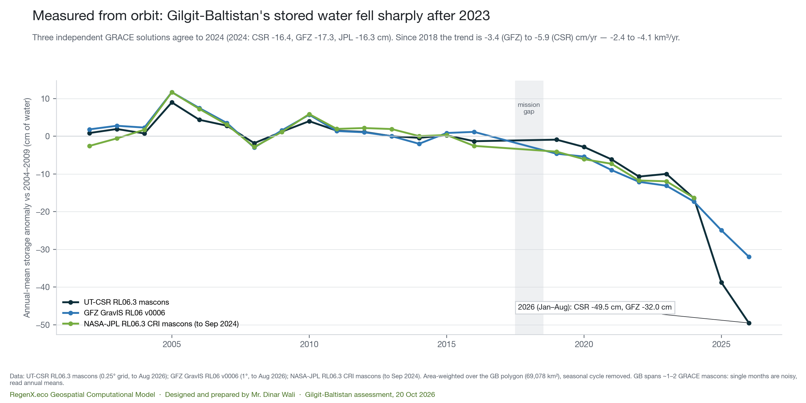
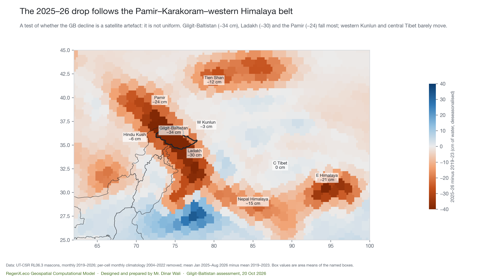
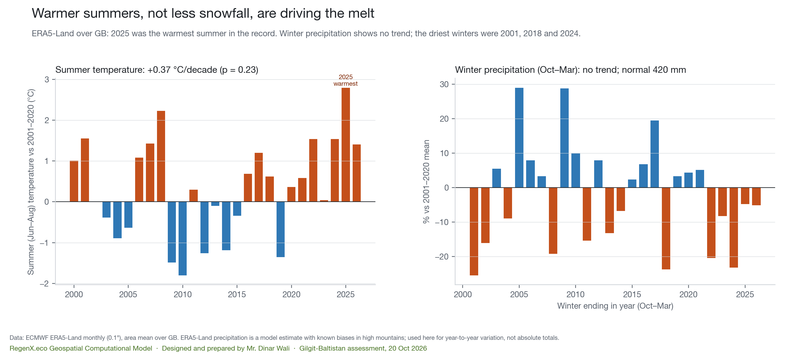
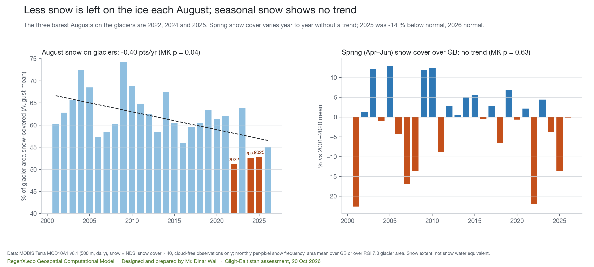
Baltoro, Biafo and Hispar (Shigar and Nagar) and Batura, Passu and Shisper (Hunza) were followed with Sentinel-2 every end of summer since L2A coverage began, and imaged in Google Earth Pro at every high-resolution date available.
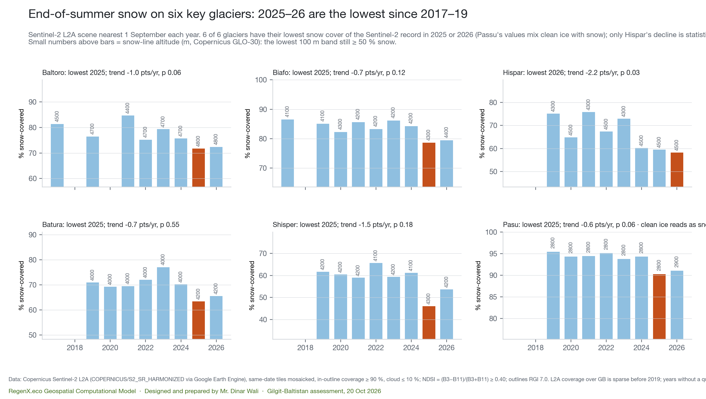
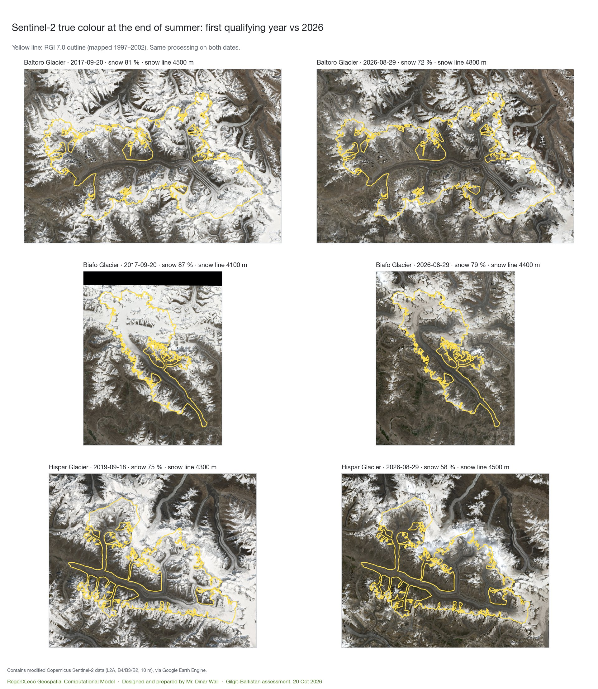
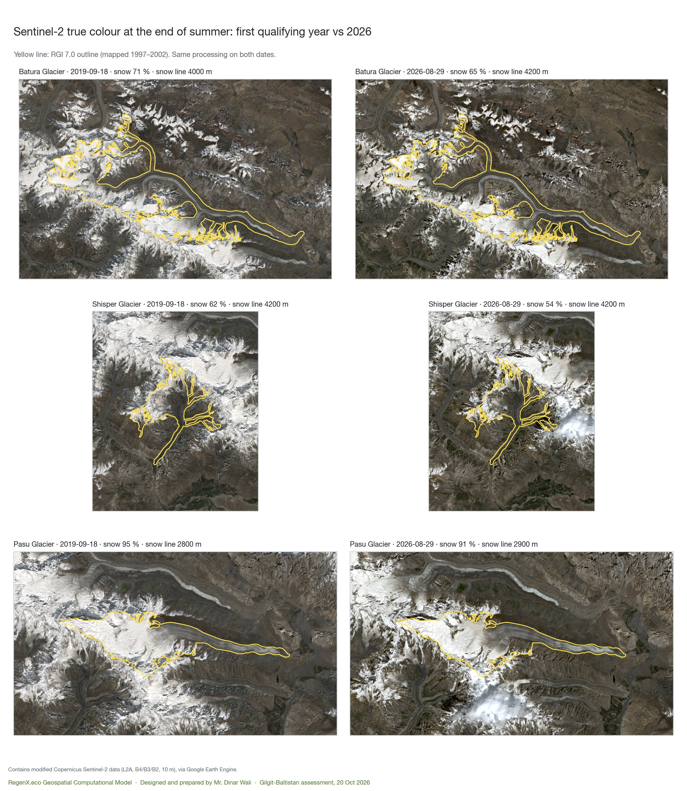
Each glacier tongue was captured top-down from the same camera at every high-resolution date Google Earth Pro holds (earlier imagery over GB is Landsat-grade only). The yellow line is the RGI 7.0 outline, drawn by Google Earth itself from KML; imagery dates were read from Earth's status bar.
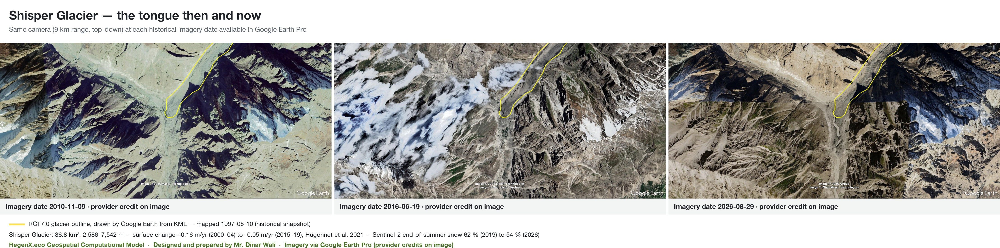
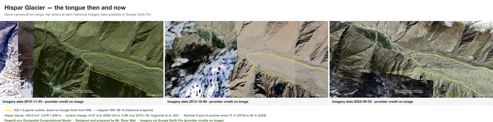
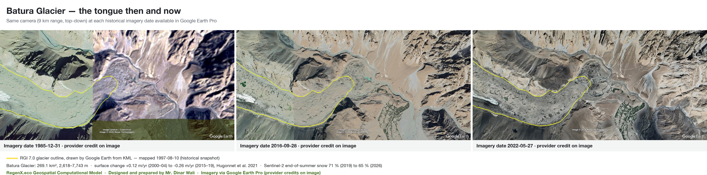
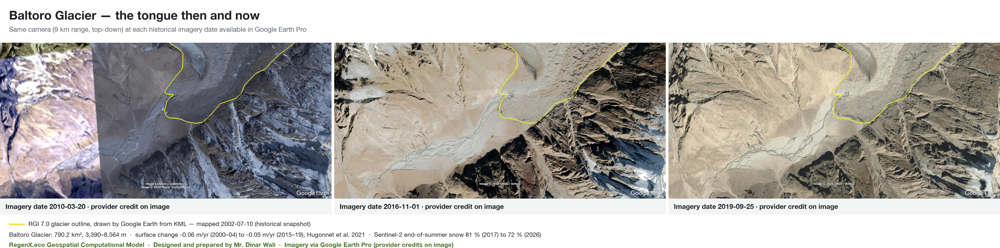
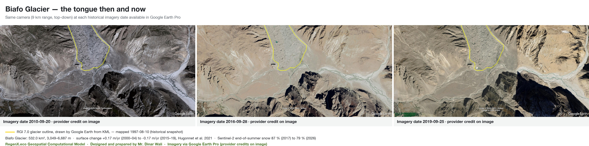
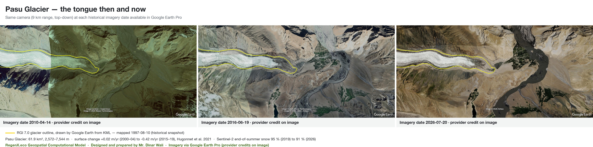
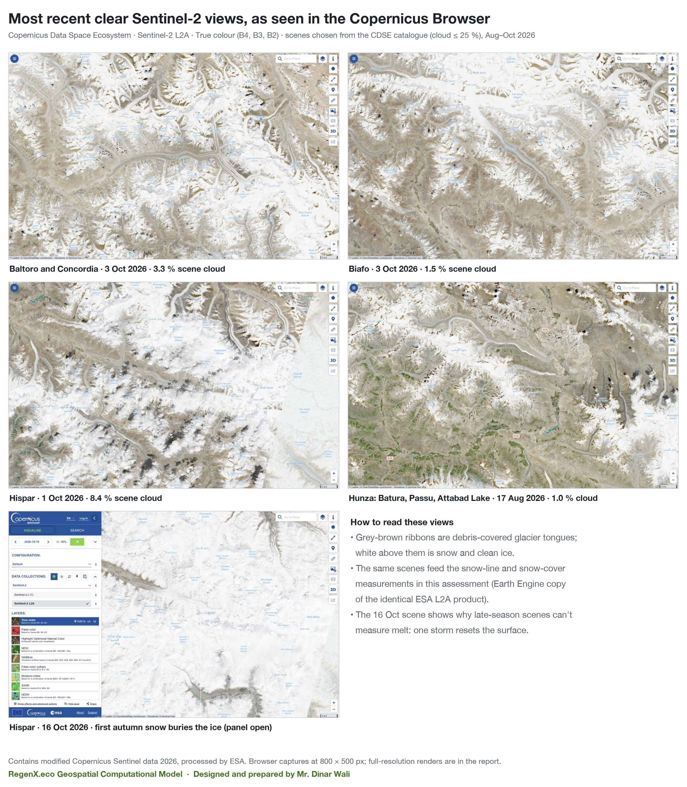
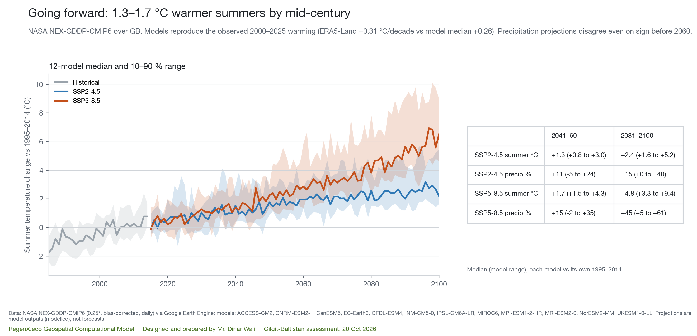
Glaciers here store water as ice and release it in summer, when downstream demand peaks. A shrinking glacier first releases more water, then less, once there is not enough ice left to sustain melt. This assessment did not model when that "peak water" turning point comes, so no date is given here.
What the measurements do support:
| Test | What it checks | Result | Outcome |
|---|---|---|---|
| Glacier inventory copy | Earth Engine RGI 7.0 against the NSIDC download used in earlier GB work | Shisper 14-08488: 36.83 km², 1997-08-10, surge 3 — identical | PASS |
| Independent GRACE solutions | CSR vs GFZ vs JPL, GB annual means | r = 0.95 (GFZ), 0.97 (JPL); 2024: −16.4 / −17.3 / −16.3 cm | PASS |
| 2025–26 drop in a second solution | Does GFZ show the CSR drop? | Yes in direction; 35 % smaller (2026: −32 vs −50 cm) | PARTLY |
| Spatial pattern | Is the 2025–26 drop a uniform satellite offset? | GB −34, Ladakh −30, Pamir −24; W Kunlun −3, C Tibet 0 cm | PASS |
| Glacier loss vs GRACE, 2010–19 | Does GB storage loss cover the measured glacier loss? | GRACE −0.33 km³/yr vs glaciers −1.17 Gt/yr; same sign, magnitude off | FAIL |
| Robust to the Siachen sector | Glacier acceleration with and without that sector | Monotonic in both; −0.10 / −0.11 m w.e./yr per decade | PASS |
| Warm summers ↔ bare glaciers | ERA5-Land JJA temperature vs MODIS August glacier snow, 2001–26 | r = −0.79 (p 1×10⁻⁶); Spearman −0.83 | PASS |
| Snowfall explains 2025–26? | Winter precipitation and spring snow in the low years | Winters −5 %; spring snow −14 % (2025), 0 % (2026) | NO |
| Climate models vs observations | CMIP6 2000–25 summer warming against ERA5-Land | ERA5 +0.31 °C/decade; models 0.10 to 1.74, median 0.26 | PASS |
| Sentinel-2 record low | Lowest end-of-summer snow in 2025 or 2026? | 6 of 6 glaciers; significant trend only at Hispar (p 0.03) | PASS |
| Earth Pro imagery dates | OCR dates against the status bar read by eye | 4 of 4 Shisper dates match after the parser fix | PASS |
The GRACE–glacier mismatch is reported as a failure. GB is only one or two GRACE mascons wide, so the satellite sees a blurred regional signal, while the glacier loss is concentrated in a few large valleys and partly on the GB boundary. GRACE at this scale cannot close GB's glacier budget.